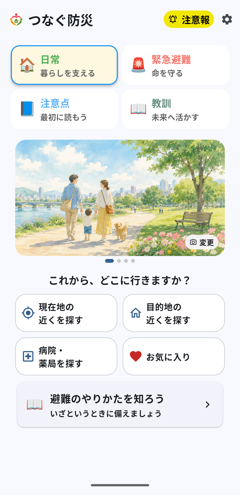
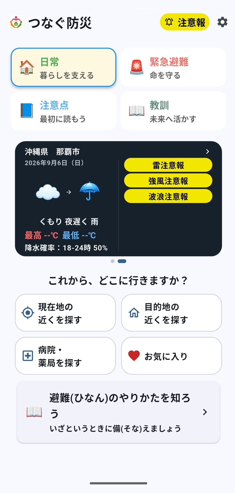
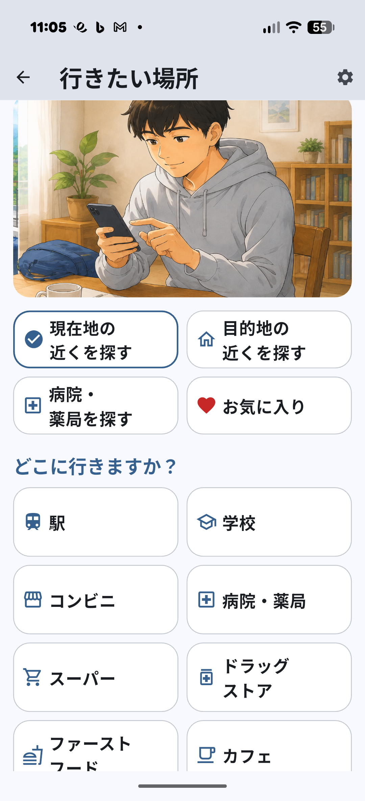
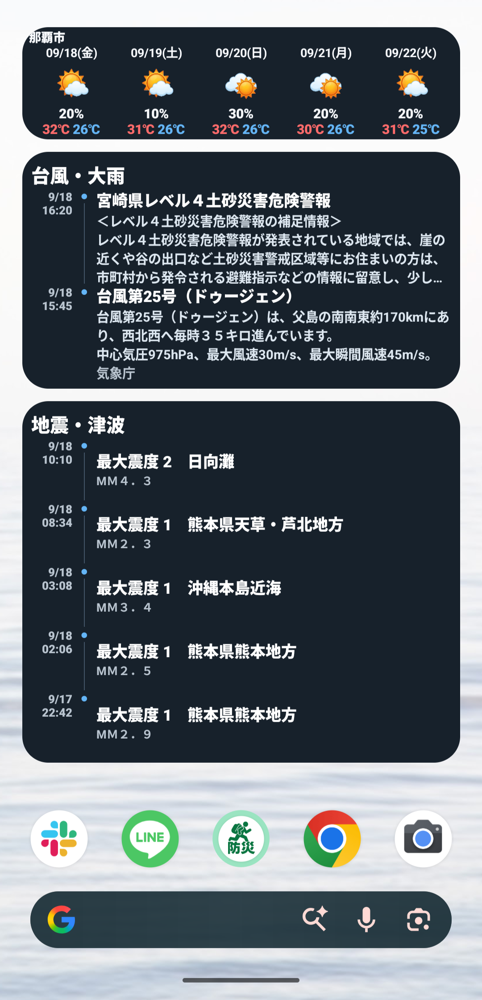
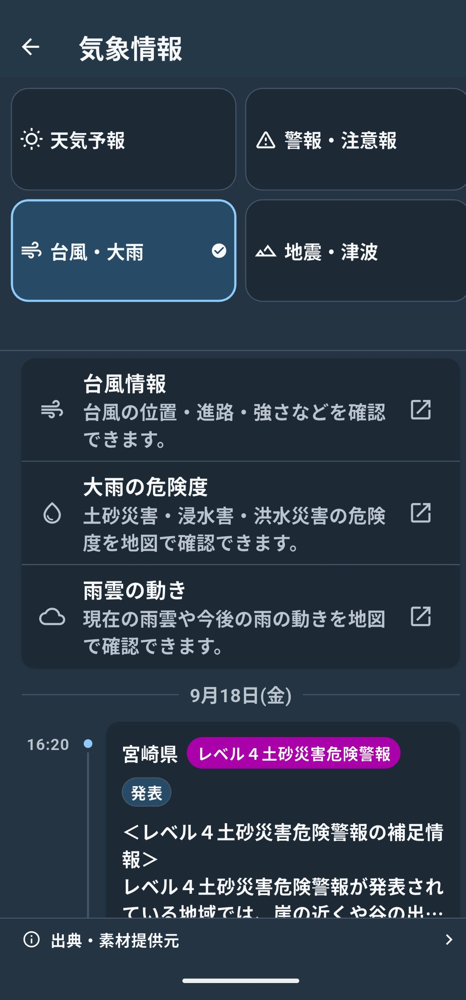
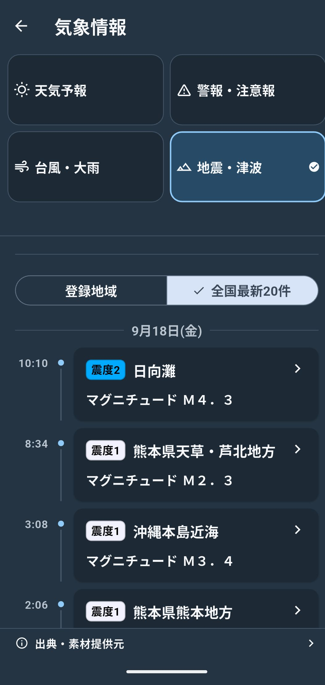
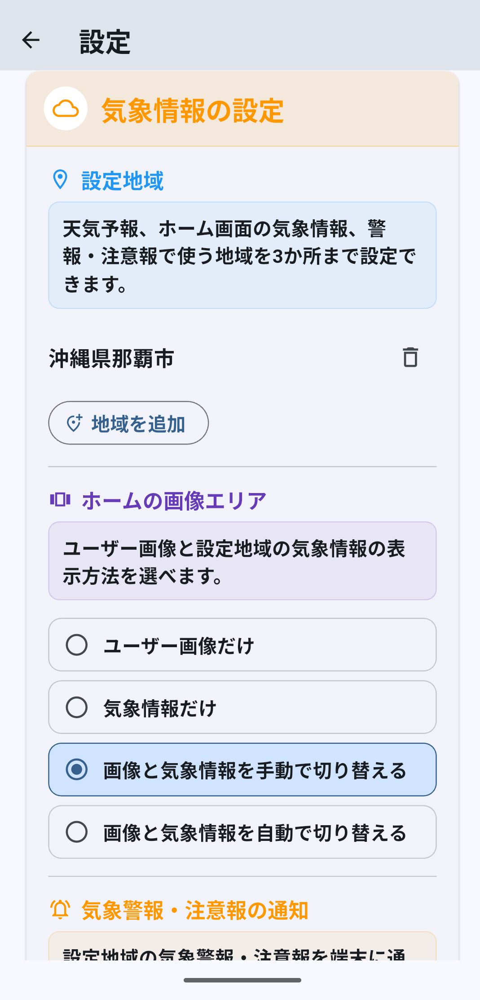
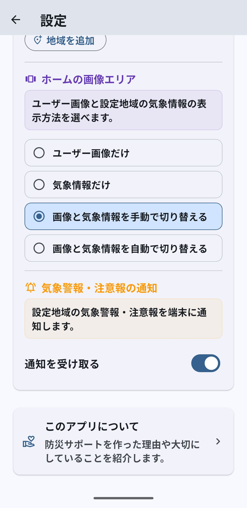
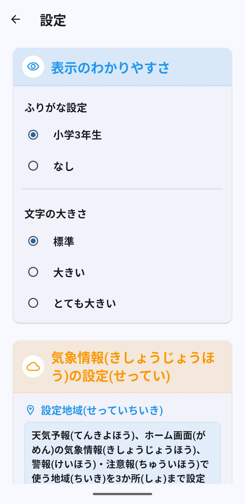

台風25号 千葉県大雨災害の暫定検証を公開しました
台風25号による千葉県の大雨災害について、 河川・ダム・浸水・土砂災害・避難・堤防決壊へと危険が連鎖した経過を整理し、 8月豪雨との違いとOffline Supportから見えた情報・見えなかった情報を検証しました。
台風25号の検証を見る防災アプリ
子どもから高齢者まで、多くの人が直感的に使え、 ふだんの生活でも使える防災アプリを目指して開発しています。


台風25号による千葉県の大雨災害について、 河川・ダム・浸水・土砂災害・避難・堤防決壊へと危険が連鎖した経過を整理し、 8月豪雨との違いとOffline Supportから見えた情報・見えなかった情報を検証しました。
台風25号の検証を見る8月13日〜14日に千葉県で発生した記録的な大雨について、 線状降水帯、短時間雨量、キキクル、避難情報、浸水被害などを 公式資料をもとに時系列で整理しました。 千葉市では、平年の8月ほぼ1か月分に相当する雨が わずか1時間に集中したことも確認できます。
千葉豪雨の検証を見る福井県が9月18日に公表した最新の被害集計を反映しました。 住家・非住家の浸水被害、河川被害、道路規制などを更新し、 発災後も調査の進展に伴って被害把握が増えていく経過を整理しています。
更新した検証を見るつなぐ防災は、災害時に通信が不安定になったときでも、 必要な情報をできるだけ端末の中だけで利用できることを目指して作っています。
子どもから高齢者まで、多くの人が直感的に使え、 ふだんの生活でも使える防災アプリを目指して開発を始めました。
避難するときの注意点や過去の災害からの教訓を知り、 これからの行動に生かしてもらいたいと考えました。
災害時には通信が不安定になることもあるため、 必要な情報をできるだけオフラインでも利用できるようにしています。
災害時だけではなく、日常でも使える機能を備えています。
ふだんの生活でも
現在地や指定した場所の近くにある駅、学校、コンビニ、 病院・薬局、銀行・ATMなどを探すことができます。


気象情報
天気予報、警報・注意報、台風・大雨、地震・津波の情報を アプリ内で確認できます。最新情報の取得には通信が必要です。



必要な地域だけ
通知対象の地域を最大3か所まで登録できます。 通知は設定でON・OFFでき、受け取った通知やアプリで確認した 現在の警報・注意報は端末内の履歴で確認できます。


もしもの時に
近くの避難場所を探したり、現在地を共有したり、 消防・救急・警察への連絡を支援します。 #7119・#8000の電話相談や、171・web171による安否確認の案内も利用できます。

使いやすさ
ふりがなの表示を「あり」「なし」から選べます。 文字の大きさも変更できます。

通信状況や電話回線、端末の状態によって利用できない場合や、 通知が遅れる場合があります。
施設検索などのために、公的機関が公開するデータや 各種オープンデータを利用しています。
公的データは、公的機関による元データの更新に合わせて 更新する予定です。
更新頻度は、年1回程度を目安としています。
データの更新時期により、施設の移転・閉鎖・名称変更などが 反映されていない場合があります。
公的データをもとに掲載している情報について、 元データ自体に誤りがある場合は、 データを公開している公的機関へお問い合わせください。
アプリへの収録・表示上の問題など、 つなぐ防災側の不具合と思われる場合は、 つなぐ防災へお知らせください。
災害時や緊急時には、アプリ内の情報だけで判断せず、 自治体・施設・関係機関などが発表する最新の情報も あわせて確認してください。
災害時は、自治体や気象庁などの公式情報も確認してください。
現在開発中のため、掲載している機能や仕様は変更される場合があります。
本アプリは、災害時の安全を保証するものではありません。
実際の災害時には、自治体・消防・警察・気象庁などから発表される 最新の情報を確認し、周囲の状況に応じて 安全を最優先に行動してください。